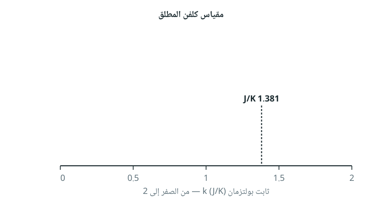

مقياس كلفن المطلق
Kelvin thermodynamic scale
مقياس كلفن هو المقياس المطلق لدرجة الحرارة، يبدأ من الصفر المطلق ويُقاس بالكلفن. يُعرَّف بتثبيت ثابت بولتزمان، فالكلفن الواحد هو تغير حراري يعادل 1.380 649×10⁻²³ جول من الطاقة الحرارية.
مقياس كلفن هو المقياس المطلق لدرجة الحرارة في النظام الدولي، ووحدته الكلفن ورمزها K. يبدأ من الصفر المطلق، وهو الحد الأدنى النظري لدرجة الحرارة حيث تنعدم الطاقة الحرارية المتاحة، ويعادل −273.15 درجة مئوية. ويعرّف كتيّب النظام الدولي الكلفن بتثبيت القيمة العددية لثابت بولتزمان k عند 1.380 649×10⁻²³ حين يُعبَّر عنها بوحدة J/K، ويترتب على ذلك أن الكلفن الواحد هو التغير الحراري الذي ينتج تغيراً في الطاقة الحرارية kT مقداره 1.380 649×10⁻²³ جول. والمقياس المطلق ضروري في الديناميكا الحرارية لأن النسب بين درجات الحرارة لا معنى لها في مقاييس نسبية كالمئوية. مثال: درجة حرارة الغرفة 25 °م تعادل 298.15 K، ونقطة تجمد الماء 273.15 K.
كيف تعمل الظاهرة؟
درجة الحرارة المطلقة تقيس متوسط الطاقة الحرارية لكل درجة حرية في النظام، وهي مرتبطة بثابت بولتزمان الذي يحوّل الطاقة إلى حرارة. فحين تزيد درجة الحرارة، يزيد متوسط الطاقة الحركية للجزيئات، فتزيد سرعاتها وتصادماتها. وعند الصفر المطلق تنعدم الطاقة الحرارية المتاحة، وتبقى طاقة نقطة الصفر الكمّية التي لا تُزال. والمقياس المطلق ضروري لأن الكفاءة الحرارية تُحسب بنسبة فروق درجات حرارة مطلقة: كفاءة كارنو = 1 − T_cold/T_hot، وهذه النسبة لا تصحّ في مقياس سيلزيوس لأن الصفر فيه اعتباطي.
العلاقة بالأرقام
T(K) = t(°C) + 273.15. وk = 1.380 649×10⁻²³ J/K قيمة تامة. والطاقة الحرارية المتوسطة لكل درجة حرية = ½kT. وكفاءة كارنو η = 1 − T_C/T_H بدرجات مطلقة. مثال: غرفة 25 °م = 298.15 K. ومحرك بين 500 K و300 K كفاءته القصوى η = 1 − 300/500 = 0.40 = 40%. والطاقة الحرارية عند 300 K لكل درجة حرية = ½×1.380 649×10⁻²³×300 = 2.071×10⁻²¹ J.
مفاهيم متقاربة
الكلفن وحدة مطلقة، والسيلزيوس مقياس نسبي: مقدار الدرجة واحد لكن نقطة البداية مختلفة. والصيغة الصحيحة «298 كلفن» لا «298 درجة كلفن». والمقياس المطلق لا يعني بلوغ الصفر المطلق، بل هو حدّ أدنى نظري. والنسبة بين درجتي حرارة مئوية بلا تحويل خطأ جوهري في كفاءة كارنو. والكلفن ليس وحدة طاقة: هو وحدة حرارة، والطاقة بالجول، والربط بينهما بثابت بولتزمان.
حدود التطبيق
لا تُستعمل النسب بين درجات حرارة سيلزيوس في أي حساب ديناميكي حراري. وعند درجات قريبة من الصفر المطلق تظهر آثار كمّية تجعل الوصف الكلاسيكي ناقصاً. وفي البلازما قد لا تُعرَّف درجة حرارة واحدة، لأن الأيونات والإلكترونات تكون في حالات حرارية مختلفة. ولا تُقاس درجات حرارة عالية جداً بمقاييس تلامسية، بل بأساليب طيفية. والصفر المطلق لا يُبلغ عملياً، وأقرب ما وُصل إليه كسور من الميلي كلفن.

| الكمية | القيمة | المصدر |
|---|---|---|
| ثابت بولتزمان k | 1.380 649×10⁻²³ J/K | [1] |
| الصفر المطلق بالسيلزيوس | −273.15 °C | [2] |
| ضغط البخار المشبع للماء عند 100 °م | 0.101 42 MPa | [3] |
المصادر
- 1 The International System of Units (SI), 9th edition (2019) — BIPM — Bureau International des Poids et Mesures (2019). www.bipm.org/en/publications/si-brochure · اطُّلع عليه 2026-11-21
- 2 The International System of Units (SI), 9th edition (2019) — BIPM — Bureau International des Poids et Mesures (2019). www.bipm.org/en/publications/si-brochure · اطُّلع عليه 2026-11-21
- 3 NISTIR 5078: Thermodynamic Properties of Water — Tabulation from the IAPWS Formulation 1995 — NIST — National Institute of Standards and Technology (1998). nvlpubs.nist.gov/nistpubs/Legacy/IR/nistir5078.pdf · اطُّلع عليه 2026-11-21
استشهد بهذا المصطلح
الصيغتان مبنيتان من بيانات الصفحة نفسها: العنوان والتاريخ ورابط النسخة المنشورة.
مقياس كلفن المطلق — Kelvin thermodynamic scale. (2026). ديوان المعرفة — انفراد. https://infiradev.com/diwan/terms/term-kelvin-scale.html
@misc{term-kelvin-scale2026,
title = {مقياس كلفن المطلق},
titleaddon = {Kelvin thermodynamic scale},
howpublished = {{ديوان المعرفة — انفراد} — مرجع علمي عربي},
year = {2026},
url = {https://infiradev.com/diwan/terms/term-kelvin-scale.html},
urldate = {2026-11-26},
note = {مراجعة علمية: hermes (مراجعة معتمدة 2026-11-26)}
}
راجعه: hermes (مراجعة معتمدة 2026-11-26) · 2026-11-26 · آخر تحديث 2026-11-21